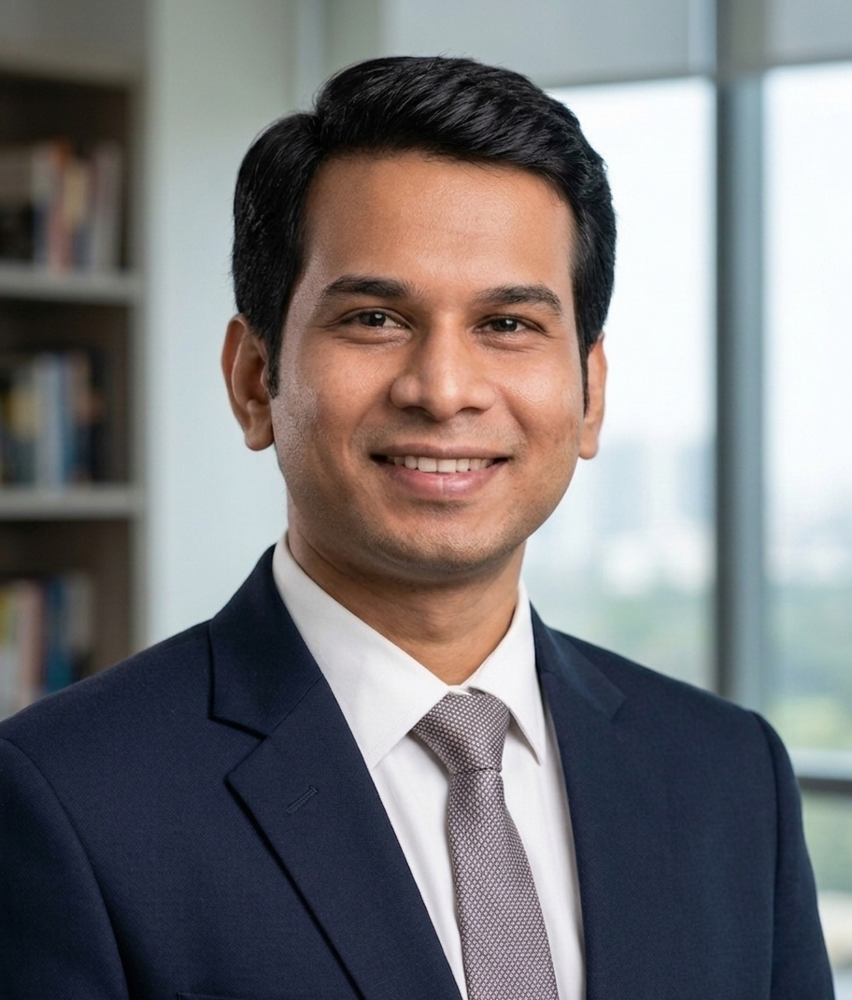

Ph.D. Candidate in Computer Science
Stony Brook University · Advised by Dr. Klaus Mueller
Hello! I am a Ph.D. candidate in Computer Science at Stony Brook University, where I am fortunate to be advised by Prof. Klaus Mueller. I am also a NSF BIAS-NRT Fellow. My research centers on Natural Language Processing, Large Language Models, Data Visualization, Human-AI Interaction, Machine Learning, and Artificial Intelligence.
Previously, I was a Senior Lecturer in the Department of Computer Science and Engineering at East West University, Bangladesh, where I taught courses in Machine Learning, Artificial Intelligence, Algorithms, Data Structures, and others, and mentored 150+ student researchers. Before that, I worked as a Specialist in Digital Services at Robi Axiata Limited, Bangladesh (2015–2016). I was also the principal investigator of national and international research projects funded by the Information and Communication Technology Division (ICTD), Government of Bangladesh, and the Information Society Innovation Fund (ISIF) Asia.
I earned my M.Sc. (2015) and B.Sc. (2013) in Computer Science and Engineering from the Department of Computer Science and Engineering, University of Dhaka, Bangladesh, where I was fortunate to work with the Green Networking Research (GNR) Lab under Professor Dr. Md. Abdur Razzaque. My research during that time spanned Cloud Computing, IoT, Green Cellular Networks, Sensor Networks, and Mobile Cloud Computing.